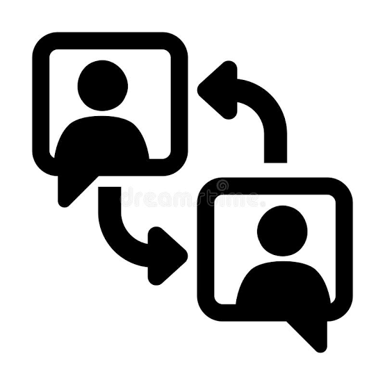
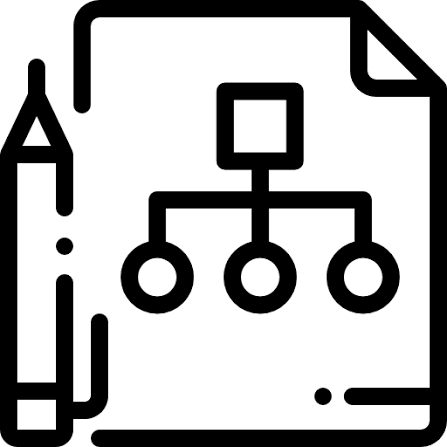
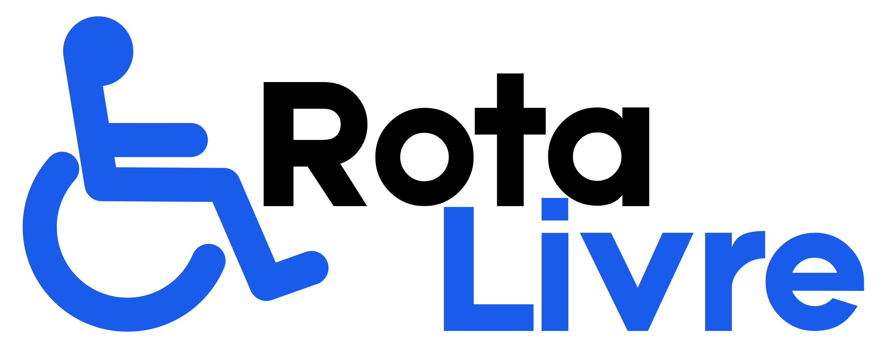

Heloísa Saito
Estudante de Engenharia de Software
Construindo meu próprio caminho na tecnologia, com dedicação, aprendizado e vontade de ir cada vez mais longe.
Veja meus projetosSobre mim
Meu nome é Heloísa Sayuri Silva Saito, sou natural de Terra Boa – PR e atualmente moro em Maringá – PR, onde me mudei para cursar Engenharia de Software. Atualmente, estou no 6º semestre da graduação e, ao longo da faculdade, tive contato com diversas linguagens e tecnologias, como C, C++, Java, JavaScript, banco de dados, entre outros. Tenho interesse em continuar desenvolvendo meus conhecimentos na área de tecnologia, principalmente em desenvolvimento Back-end, área na qual gostaria de me aprofundar cada vez mais. Apesar disso, também gosto muito de desenvolvimento Front-end e tenho interesse em aprender e explorar diferentes possibilidades dentro da programação. Busco oportunidades que me permitam adquirir experiência prática, aplicar os conhecimentos que já possuo e continuar evoluindo profissionalmente.
Habilidades

COMUNICAÇÃO
TRABALHO EM EQUIPE

ORGANIZAÇÃO
-
FACILIDADE EM APRENDIZADO

RESOLUÇÃO DE PROBLEMAS
Alguns Projetos, Extensões, Trabalho e Participações.....
Iluminação Sustentável
Desenvolvimento de um sistema de iluminação pública inteligente, capaz de acionar automaticamente a iluminação em determinadas regiões conforme a necessidade, garantindo maior visibilidade e segurança em bairros com pouca iluminação, além de promover o uso consciente de energia e a sustentabilidade.
Professores no mundo Tecnológico
Desenvolvimento de uma cartilha e de um e-book com orientações para auxiliar professores na integração da tecnologia aos métodos de ensino, apresentando ferramentas e possibilidades para tornar as aulas mais dinâmicas e interativas.
Fraudes em Compras Online
Elaboração de panfletos informativos com QR Codes direcionando a conteúdos sobre dicas de segurança e cuidados necessários para evitar golpes em compras online, conscientizando as pessoas sobre os riscos e as formas de se proteger no ambiente digital.

Rota Livre
Desenvolvimento de um sistema comunitário que permite aos cidadãos registrar problemas identificados em suas localidades, encaminhando as solicitações aos setores responsáveis para acompanhamento e providências, facilitando a comunicação entre a população e os órgãos públicos e contribuindo para a resolução mais ágil das demandas.
Projeto Meu Currículo
Projeto desenvolvido durante a Workingtech da unicesumar trabalhando os web fundamentos
Mentoria de Robótica
AAtuação como mentora de alunos do Ensino Fundamental e Ensino Médio, auxiliando na aplicação prática de conceitos de robótica e incentivando o aprendizado por meio de atividades interativas, experimentação e desenvolvimento de habilidades tecnológicas.
Descarte Eletrônico
Realização de apresentações e ações educativas para a comunidade, abordando a conscientização sobre o descarte correto de lixo eletrônico e a importância da segurança digital, compartilhando orientações para promover práticas mais sustentáveis e o uso seguro da tecnologia.
Inclusão Digital dos Idosos
Elaboração de cartilhas e realização de apresentações educativas voltadas à inclusão digital de idosos, abordando conceitos básicos de tecnologia e ensinando o uso de ferramentas financeiras digitais, especialmente transferências de dinheiro, de forma simples, acessível e segura.
Minhas experiências
Benner
Operadora de Atendimento
Atuação no atendimento ao cliente, realizando abertura, acompanhamento e resolução de chamados, além de orientar usuários e auxiliar na identificação de soluções.
Escola Municipal Princesa Isabel
Estagiária
Participação na implementação do projeto Educação Digital, auxiliando professores na utilização de recursos tecnológicos e no desenvolvimento de atividades educativas com os alunos.
Associação Comercial de Terra Boa
Jovem Aprendiz
Realização de atividades administrativas, organização de documentos e elaboração de relatórios relacionados a notas fiscais.
Certificações e Cursos
Programação em C#
Curso de introdução à linguagem C#, com aprendizado dos principais conceitos de programação.
AluraEngenharia de Prompt
Estudo de técnicas para elaborar e aprimorar comandos para ferramentas de inteligência artificial, buscando respostas mais precisas e eficientes.
AluraBanco de Dados
Aprendizado sobre organização, consulta e manipulação de dados, utilizando conceitos de bancos de dados relacionais e comandos SQL.
AluraSQL
Aprendizado de comandos SQL para realizar consultas, inserir, atualizar e manipular informações em bancos de dados relacionais.
AluraInglês
Desenvolvimento de conhecimentos em língua inglesa por meio de estudos e curso on-line.
Curso on-lineEngenharia de Software
Formação acadêmica em andamento, com estudos em programação, banco de dados e desenvolvimento de sistemas, entre outros.
UNICESUMAR